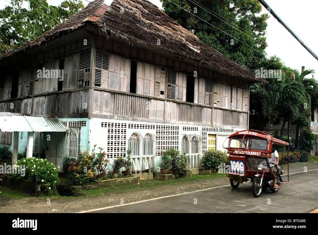

Topics

Siquijor is known for its rich history, including its mysterious folklore. It was once part of the Spanish colonial administration...

The current population of Siquijor is approximately 100,000 people. The island is known for its peaceful rural lifestyle...

Siquijor is divided into six municipalities: Siquijor, Larena, Enrique Villanueva, San Juan, Lazi, and Maria...

Siquijor is famous for its beautiful beaches, waterfalls, and mystical sites. Popular attractions include Cambugahay Falls...